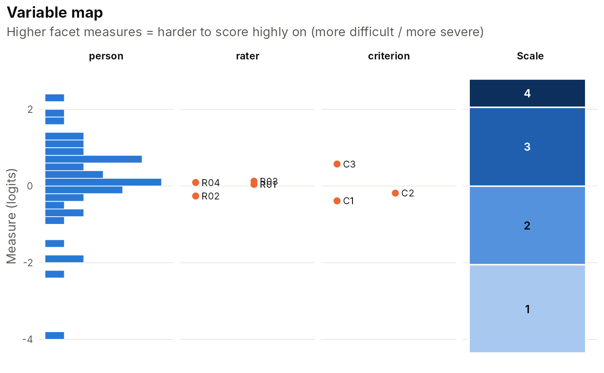

Estimates a many-facet Rasch measurement (MFRM) model of the kind fitted by Linacre's FACETS program, for example persons rated by raters on several criteria. The log-odds of scoring in category k rather than k-1 is $$\theta_n - \sum_f \beta_{f,e} - \tau_{s,k}$$ where \(\theta_n\) is the person measure, \(\beta_{f,e}\) the measure of element e of facet f (item difficulty, rater severity, ...) and \(\tau_{s,k}\) the Andrich thresholds, shared by all observations (rating scale model) or specific to each element of a `step_facet` (partial credit model).
Usage
mfrm_fit(
data,
person,
facets,
score,
model = c("rsm", "pcm"),
step_facet = NULL,
quadpts = 61,
maxit = 500,
tol = 1e-05,
se = TRUE
)Arguments
- data
A long-format data frame with one row per rating.
- person
Name of the person column.
- facets
Character vector naming the facet columns (e.g. `c("rater", "criterion")`).
- score
Name of the score column (ordered numeric categories).
- model
`"rsm"` (rating scale, default) or `"pcm"` (partial credit).
- step_facet
For `"pcm"`, the facet whose elements get their own thresholds (defaults to the first facet).
- quadpts
Number of quadrature points.
- maxit, tol
Control for the EM warm-up (at most 10 cycles) that is followed by direct quasi-Newton maximisation of the marginal likelihood.
- se
Compute standard errors (`TRUE`).
Details
Estimation is by marginal maximum likelihood with persons drawn from \(N(\mu, \sigma^2)\). As in FACETS, the non-person facets are centred at zero and the person mean is estimated. Higher facet measures mean "harder to score highly on" (more difficult items, more severe raters).
Examples
set.seed(1)
ratings <- sim_mfrm(n_person = 40, n_rater = 4, n_criterion = 3, ncat = 4)
fit <- mfrm_fit(ratings, "person", c("rater", "criterion"), "score")
fit
#> <mfrmfit> many-facet Rasch (RSM)
#> 480 ratings | person: 40 | rater: 4 | criterion: 3
#> Categories: 1,2,3,4 | person mean = 0.102, SD = 1.028
#> log-likelihood = -540.157 AIC = 1098.31 BIC = 1135.88 (converged in 52 cycles)
# \donttest{
facet_report(fit)
#>
#> == rater measurement report ==
#> element measure se count total obs_avg fair_avg infit infit_z outfit
#> R03 0.13 0.11 120 300 2.50 2.49 1.00 0.03 1.02
#> R04 0.09 0.11 120 302 2.52 2.51 1.00 0.01 0.96
#> R01 0.04 0.11 120 305 2.54 2.53 0.77 -2.01 0.76
#> R02 -0.26 0.11 120 323 2.69 2.70 0.97 -0.23 0.94
#> outfit_z flag
#> 0.19 productive
#> -0.26 productive
#> -2.01 productive
#> -0.45 productive
#>
#> == criterion measurement report ==
#> element measure se count total obs_avg fair_avg infit infit_z outfit
#> C3 0.57 0.10 160 364 2.28 2.24 1.08 0.81 1.06
#> C2 -0.19 0.09 160 425 2.66 2.66 0.95 -0.50 0.94
#> C1 -0.39 0.09 160 441 2.76 2.77 0.77 -2.36 0.77
#> outfit_z flag
#> 0.53 productive
#> -0.57 productive
#> -2.31 productive
#>
#> == Facet summary ==
#> facet elements mean sd mean_se separation strata reliability chisq df
#> person 40 0.08 1.16 0.42 2.50 3.67 0.86 199.50 39
#> rater 4 0.00 0.18 0.11 1.22 1.96 0.60 7.36 3
#> criterion 3 0.00 0.51 0.09 5.28 7.37 0.97 56.08 2
#> p
#> 0.00
#> 0.06
#> 0.00
#>
#> == Rating scale (category) statistics ==
#> group category count percent avg_measure exp_measure threshold threshold_se
#> all 1 60 12.50 -1.76 -1.58 NA NA
#> all 2 162 33.75 -0.21 -0.22 -1.72 0.15
#> all 3 186 38.75 0.54 0.50 -0.01 0.13
#> all 4 72 15.00 1.08 1.11 1.73 0.14
#> disordered
#> FALSE
#> FALSE
#> FALSE
#> FALSE
#>
#> Person measures: use $measures$person
plot(fit, "facets")

# }